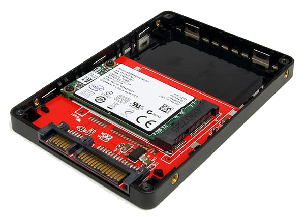
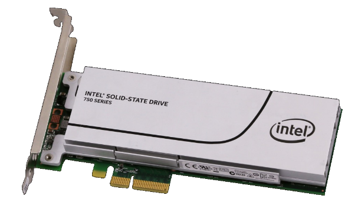
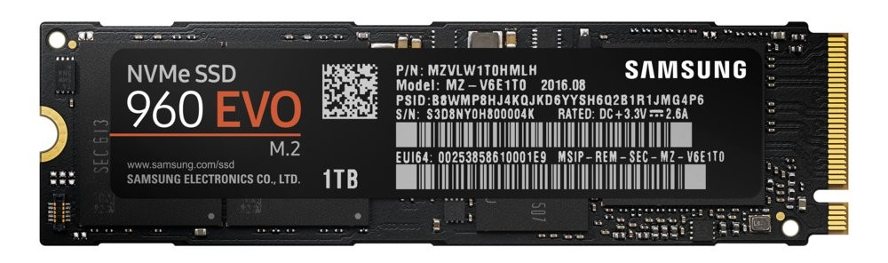
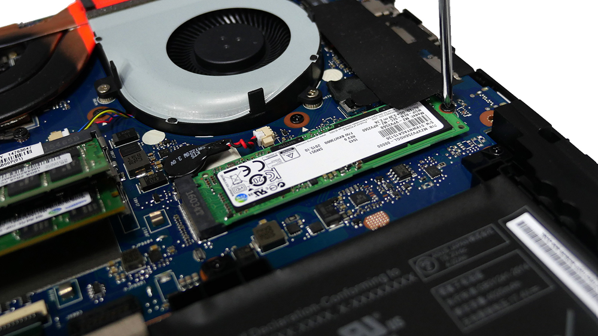

Net zoals alle andere componenten in en rond een computer worden harde schijven telkens sneller en kleiner. Zeker met de komst van SSD's waarbij de platters en koppen simpelweg niet meer nodig zijn kunnen de afmetingen substantieel verkleind worden.
Een SATA SSD ziet er echter nog heel vaak hetzelfde uit als een klassieke harde schijf. Meestal komt deze in een 2.5" verpakking terwijl die ruimte simpelweg niet gebruikt hoeft te worden.

Een PCI Express SSD is dan wel snel maar zeer groot en past al helemaal niet in een laptop.

Een M.2 aansluiting is een interface die hoge snelheden levert via PCI Express in een kleine afmeting. Het is dus zeer geschikt voor laptops, ultrabooks of tablets.

Je vindt een M.2 aansluiting dan ook steeds meer terug op allerlei moederborden, zelfs op moederborden die geschikt zijn voor desktop computers.

Als je een SSD wil aankopen die gebruik maakt van M.2 moet je op een aantal zaken letten. Hou rekening met het feit dat er spijtig genoeg verschillen zijn in lengte waardoor niet alle M.2 SSD's compatibel zijn. Probeer ook een M.2 SSD te vinden die gebruik maakt van de laatste versie van de PCI Express standaard en niet met SATA.